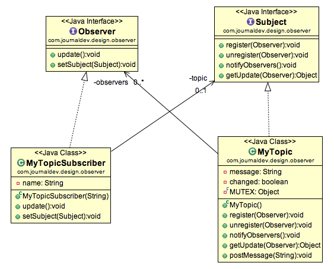

Bài toán
Quay lại nhà hàng cuối phố.
Mỗi ngày nhân viên phục vụ lại nhận order của khách hàng, sau đó mang vào bếp đưa cho các anh đầu bếp.
Sau đó, cứ một khoảng thời gian, anh lại chạy vào, tìm xem có đầu bếp nào đã hoàn thành món ăn và mang ra cho khách hàng.
Tuy nhiên, anh phục vụ cũng lười nên lâu lâu mới vào kiểm tra một lần. Vì vậy đôi khi khiến cho khách hàng ko hài lòng vì đợi lâu.
Điều này khiến ông chủ không hài lòng, ông quyết định phải sửa đổi lại cách làm việc.
Giải pháp
Sau một thời gian suy xét, ông chủ quyết định như sau:
Chia khu vực nội bộ làm hai, khu vực bếp và khu vực phục vụ.
Mỗi ngày, người phục vụ sẽ đưa các order vào một xấp giấy và chồng trước bếp, một anh phụ bếp sẽ lấy nó, phân chia cho các đầu bếp. Sau đó khi đầu bếp nấu xong, họ để qua một bên, và người phụ bếp này lại đi thu thập và mang ra khu dịch vụ để.
Sau đó, anh ta thông báo cho các nhân viên phục vụ để họ có thể biết, và quay vào quầy lấy và mang ra cho khách hàng.
Anh phụ bếp trong tình huống này là Observer.
Khi có một sự thay đổi (món ăn đã sẵn sàng) thì Observer sẽ notify lên cho các object đang listen nó biết. Khách hàng là người ko cần biết, ông chủ là người không cần biết, chỉ có anh phục vụ là cần biết thôi.
Implements
Trong mô hình hình Observer, có 2 đối tượng chính, Observer đóng vai trò người quan sát, và một Subject, đóng vai trò là đối tượng cần giám sát.
Việc triển khai cái này cũng khá đơn giản.
Ví dụ trong kia chỉ là ví dụ đơn giản, và mang tính một chiều, tức là chỉ có thằng subject notify cho mấy thằng con biết.
Trong mô hình thực tế, ta sẽ gặp trường hợp, các object cùng lắng nghe nhau, khi có 1 object thay đổi, nó sẽ thông báo cho tất cả được biết.
Important things
Observer design pattern is also called as publish-subscribe pattern. Some of it’s implementations are;
- java.util.EventListener in Swing
- javax.servlet.http.HttpSessionBindingListener
- javax.servlet.http.HttpSessionAttributeListener